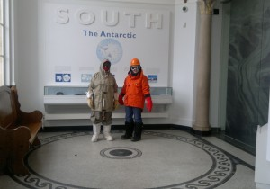

Thresholds poet Jo Shapcott is in residence at The Polar Museum this week. Here she is with poet Kaddy Benyon setting off for a poetry workshop:

Visitors are encouraged to try on the Museum’s set of modern polar clothing of the type worn by SPRI and British Antarctic Survey staff for fieldwork in the polar regions. Other sets of modern and vintage clothing are regularly lent out to schools as part of our handling collection. You quickly learn that multiple layers and really effective insulation can keep you very warm indeed, even in sub-zero temperatures!

Ringing the ship’s bell of Terra Nova, the vessel captained by Robert Falcon Scott on his second expedition to the Antarctic, is an important part of the life of the Scott Polar Research Institute.The bell is rung twice a day on ship’s time – five bells at 10:30am and eight bells at 4:00pm – to summon staff and visiting researchers to tea. It’s a chance for everyone to get together and exchange ideas, learn about new initiatives and generally get to know one another. The bell was a gift to the Polar Museum from Lady Nicholson, whose nephew, E.L. Atkinson, was surgeon on the Terra Nova expedition, on which Scott and four of his companions died in March 1912, returning from the South Pole.

Ann Gray and I walked in the snow scape at the Botanic Garden enjoying the silent scene. We were tree hunting but found both plant and animal treasures. We saw animal foot prints in the snow – predominantly human and of dramatically different sizes. There were paw prints both small and large too; we thought of foxes and Muntjac deer, the biggest of all was probably badger (surely not bear). We looked at fantastic trails of tripod bird prints. The best animal was a secret snow-white snow cat balanced on a branch. It was left there by some secret visitor for us to find and enjoy.

We admired the tiny, bright, scarlet flowers of the Persian Ironwood tree, made all the more dramatic by the snow etched branches. We went to find out how long this tree had been in the Garden and found records of the receipt of seed in 1880 and 1881 written in beautiful copperplate handwriting in the Accessions Ledgers. The plant label on the tree told us this plant had come from Iran, its common name told us this was originally Persia. Our Director told us over lunch that the tree was given its Latin name, Parrotia persica after the German naturalist Friedrich Parrot who discovered the tree during the nineteenth century.
Judy Fox
Welcome to Thresholds an exciting new poetry project supported by the University of Cambridge and Arts Council England in Cambridge Museums and Collections.
I have invited ten of the best UK poets writing today to take part in an unprecedented and extraordinary series of residencies at the University of Cambridge. This is a stunning level of commitment to poetry and poets and to young people who want to develop their writing.
Each poet will spend time in their museum or collection exploring the collections and working with young people, helping them to develop their critical thinking skills as well as their writing. The ten poets have also been commissioned to write a new poem informed and inspired by the collections.
Seamus Heaney once said “Poetry is more a threshold than a path, one constantly departed from, at which readers and writers undergo, in their different ways, the experience of being at the same time summoned and released.”
This project will summon you to poetry, and to these many remarkable and beautiful museums and collections through events, exciting interventions, online discussions and new writing. All you have to do is walk over the threshold…

Remember: poems are not descriptions of things.
Don’t look for ‘something to write about’. Let it look for you. Poets don’t really write ‘about’ things – they write with them.
When your object finds you, make a meticulous description of it, so you can remember it. Take a picture on your phone if you can. Make notes on its history, use, inventor – you never know which of these details will spark a great poem.
As we say, ‘subject matter is pretext’. That means that despite the fact you think you’re writing about Newton’s prism – it’ll often turn out to be an excuse to write about something else. Chances are your object will really be a symbol or a metaphor of some feeling, event, situation, idea, person, buried memory – that will surprise you.
It’s a powerful silence, here in the exhibition hall of the Museum of Zoology. About me is the alphabet of life, the fossils and bones of a story, creatures pressed like fine engravings in stone, the skeleton of a 62 foot fin-whale, a wasp too small to see without a glass. A class of shouting children just passed through, and not even my favourite ichthyosaur stirred its beautiful bones. The past is behind glass. I hope poetry can find the spell to open it.